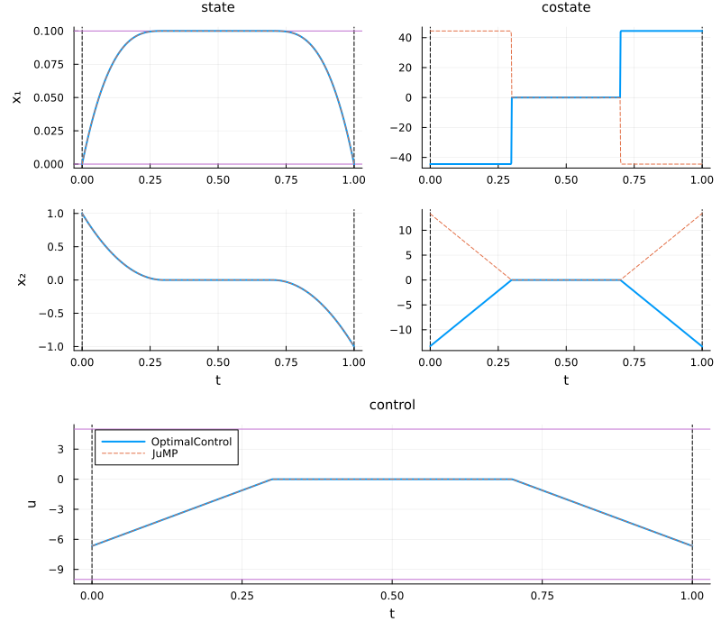

Solve a problem
In this tutorial, we consider the Beam problem. First, import the OptimalControlProblems package to access the problem:
using OptimalControlProblemsSolving from an OptimalControl model
First, import the problem:
using OptimalControl
docp, model = beam(OptimalControlBackend())The model represents the nonlinear programming problem (NLP) obtained after discretising the optimal control problem (OCP). See the Introduction page for details. The model is an ADNLPModels.ADNLPModel, which provides automatic differentiation (AD)-based models that follow the NLPModels.jl API.
We can then solve the problem using, for instance, NLPModelsIpopt.ipopt:
using NLPModelsIpopt
# Solve the model
sol = NLPModelsIpopt.ipopt(
model;
print_level=5,
tol=1e-8,
mu_strategy="adaptive",
sb="yes",
)This is Ipopt version 3.14.17, running with linear solver MUMPS 5.8.0.
Number of nonzeros in equality constraint Jacobian...: 6005
Number of nonzeros in inequality constraint Jacobian.: 0
Number of nonzeros in Lagrangian Hessian.............: 501
Total number of variables............................: 2004
variables with only lower bounds: 0
variables with lower and upper bounds: 1002
variables with only upper bounds: 0
Total number of equality constraints.................: 1505
Total number of inequality constraints...............: 0
inequality constraints with only lower bounds: 0
inequality constraints with lower and upper bounds: 0
inequality constraints with only upper bounds: 0
iter objective inf_pr inf_du lg(mu) ||d|| lg(rg) alpha_du alpha_pr ls
0 1.0000000e-01 1.10e+00 3.20e-13 0.0 0.00e+00 - 0.00e+00 0.00e+00 0
1 -6.2351733e-02 7.50e-01 1.72e+00 -0.9 3.39e+00 - 5.94e-01 3.18e-01h 1
2 3.0189625e+00 1.13e-01 1.82e+00 -0.8 7.62e+00 - 6.98e-01 9.90e-01f 1
3 1.3628810e+01 7.82e-03 1.29e+01 -0.4 1.07e+01 - 1.00e+00 9.90e-01h 1
4 1.3770091e+01 6.14e-05 1.30e+01 -2.0 1.42e-01 - 9.88e-01 9.93e-01h 1
5 1.0898593e+01 1.77e-03 4.29e-12 -2.4 2.87e+00 - 1.00e+00 1.00e+00f 1
6 9.1951172e+00 1.87e-03 3.45e+02 -3.2 1.70e+00 - 9.94e-01 1.00e+00f 1
7 8.9058955e+00 5.05e-04 1.13e+04 -4.1 3.60e-01 - 1.00e+00 8.03e-01h 1
8 8.8962245e+00 9.55e-05 2.63e+02 -4.2 2.23e-01 - 1.00e+00 9.79e-01h 1
9 8.8949904e+00 7.89e-05 2.92e+03 -5.4 1.68e-01 - 6.22e-01 1.93e-01h 1
iter objective inf_pr inf_du lg(mu) ||d|| lg(rg) alpha_du alpha_pr ls
10 8.8918580e+00 3.22e-05 3.57e+02 -4.6 1.21e-01 - 3.49e-01 8.39e-01h 1
11 8.8916676e+00 2.97e-05 8.21e+02 -10.5 1.14e-01 - 2.63e-01 8.19e-02h 1
12 8.8910044e+00 2.07e-05 9.86e+02 -5.3 7.51e-02 - 6.53e-01 3.45e-01h 1
13 8.8898873e+00 1.52e-05 1.84e+02 -6.5 9.94e-02 - 3.87e-01 5.97e-01h 1
14 8.8898546e+00 1.42e-05 3.26e+02 -11.0 7.75e-02 - 3.01e-01 6.73e-02h 1
15 8.8896167e+00 9.82e-06 2.81e+02 -6.3 4.60e-02 - 4.87e-01 3.34e-01h 1
16 8.8895868e+00 9.05e-06 3.66e+02 -11.0 6.75e-02 - 4.96e-01 8.14e-02h 1
17 8.8893939e+00 5.88e-06 1.99e+02 -6.5 5.03e-02 - 2.81e-01 4.18e-01h 1
18 8.8893805e+00 5.40e-06 2.73e+02 -7.5 5.02e-02 - 1.00e+00 8.46e-02h 1
19 8.8893033e+00 3.78e-06 1.49e+02 -6.4 4.25e-02 - 1.00e+00 3.60e-01h 1
iter objective inf_pr inf_du lg(mu) ||d|| lg(rg) alpha_du alpha_pr ls
20 8.8892452e+00 2.56e-06 1.98e+01 -6.6 3.77e-02 - 1.00e+00 8.80e-01h 1
21 8.8892692e+00 9.99e-07 1.20e+01 -7.5 1.84e-02 - 1.00e+00 7.22e-01h 1
22 8.8892788e+00 2.97e-07 7.79e-01 -7.8 1.23e-02 - 1.00e+00 9.43e-01h 1
23 8.8892812e+00 7.10e-08 3.26e-01 -8.6 5.93e-03 - 1.00e+00 9.56e-01h 1
24 8.8892814e+00 1.72e-08 1.43e-02 -9.6 3.05e-03 - 1.00e+00 9.96e-01h 1
25 8.8892816e+00 3.38e-09 7.11e-15 -10.8 1.34e-03 - 1.00e+00 1.00e+00h 1
Number of Iterations....: 25
(scaled) (unscaled)
Objective...............: 8.8892815551821140e+00 8.8892815551821140e+00
Dual infeasibility......: 7.1054273576010019e-15 7.1054273576010019e-15
Constraint violation....: 3.3833567059105008e-09 3.3833567059105008e-09
Variable bound violation: 9.9998719305105510e-09 9.9998719305105510e-09
Complementarity.........: 1.1430715933007049e-09 1.1430715933007049e-09
Overall NLP error.......: 3.3833567059105008e-09 3.3833567059105008e-09
Number of objective function evaluations = 26
Number of objective gradient evaluations = 26
Number of equality constraint evaluations = 26
Number of inequality constraint evaluations = 0
Number of equality constraint Jacobian evaluations = 26
Number of inequality constraint Jacobian evaluations = 0
Number of Lagrangian Hessian evaluations = 25
Total seconds in IPOPT = 0.089
EXIT: Optimal Solution Found.To get the number of iterations:
sol.iter25To recover the state, control, and costate, we recommend building an optimal control solution and using the associated getters:
ocp_sol = build_OCP_solution(
docp;
primal=sol.solution,
dual=sol.multipliers,
docp_solution=sol,
)
t = time_grid(ocp_sol) # t0, ..., tN = tf
x = state(ocp_sol) # function of time
u = control(ocp_sol) # function of time
p = costate(ocp_sol) # function of time
o = objective(ocp_sol) # scalar objective value
tf = t[end]
println("tf = ", tf)
println("x(tf) = ", x(tf))
println("u(tf) = ", u(tf))
println("p(tf) = ", p(tf))
println("objective value: ", o)tf = 1.0
x(tf) = [1.4630077262713708e-36, -1.0]
u(tf) = -6.644780191242297
p(tf) = [44.44725640755041, -13.378454898539172]
objective value: 8.889281555182114If the problem includes additional optimisation variables, such as the final time, you can retrieve them with:
v = variable(ocp_sol)From ocp_sol you can also plot the state, control, and costate trajectories. For more details about plotting optimal control problems, see the Plot Manual.
using Plots
plt = plot(ocp_sol; color=1, size=(800, 700), control_style=(label="OptimalControl", ))Solving from a JuMP model
First, import the JuMP model:
using JuMP
model = beam(JuMPBackend())A JuMP Model
├ solver: none
├ objective_sense: MIN_SENSE
│ └ objective_function_type: QuadExpr
├ num_variables: 1503
├ num_constraints: 3008
│ ├ AffExpr in MOI.EqualTo{Float64}: 1004
│ ├ VariableRef in MOI.GreaterThan{Float64}: 1002
│ └ VariableRef in MOI.LessThan{Float64}: 1002
└ Names registered in the model
└ :u, :x1, :x2, :∂x1, :∂x2We can then solve the problem using the JuMP.optimize! function:
using Ipopt
# Set the optimiser
set_optimizer(model, Ipopt.Optimizer)
# Set optimiser attributes
set_optimizer_attribute(model, "tol", 1e-8)
set_optimizer_attribute(model, "mu_strategy", "adaptive")
set_optimizer_attribute(model, "linear_solver", "mumps")
set_optimizer_attribute(model, "sb", "yes")
# Solve the model
optimize!(model)This is Ipopt version 3.14.17, running with linear solver MUMPS 5.8.0.
Number of nonzeros in equality constraint Jacobian...: 4004
Number of nonzeros in inequality constraint Jacobian.: 0
Number of nonzeros in Lagrangian Hessian.............: 501
Total number of variables............................: 1503
variables with only lower bounds: 0
variables with lower and upper bounds: 1002
variables with only upper bounds: 0
Total number of equality constraints.................: 1004
Total number of inequality constraints...............: 0
inequality constraints with only lower bounds: 0
inequality constraints with lower and upper bounds: 0
inequality constraints with only upper bounds: 0
iter objective inf_pr inf_du lg(mu) ||d|| lg(rg) alpha_du alpha_pr ls
0 1.0000000e-02 1.10e+00 2.54e-13 0.0 0.00e+00 - 0.00e+00 0.00e+00 0
1 3.6382396e-01 7.50e-01 1.72e+00 -0.9 3.39e+00 - 5.94e-01 3.18e-01h 1
2 1.1944708e+01 7.50e-03 1.82e+00 -0.8 7.62e+00 - 6.98e-01 9.90e-01f 1
3 1.2010093e+01 7.48e-05 2.84e-01 -1.9 2.53e-01 - 9.98e-01 9.90e-01h 1
4 1.0698046e+01 5.30e-07 1.46e+00 -2.4 1.80e+00 - 9.94e-01 9.93e-01f 1
5 9.2863700e+00 9.45e-17 2.37e+01 -3.2 9.06e-01 - 9.99e-01 1.00e+00f 1
6 8.9473960e+00 9.02e-17 2.67e+03 -4.2 2.48e-01 - 1.00e+00 7.69e-01f 1
7 8.9328684e+00 1.41e-16 6.58e+03 -5.1 2.35e-01 - 1.00e+00 2.34e-01f 1
8 8.9059261e+00 1.08e-16 2.68e+03 -4.7 2.86e-01 - 3.16e-01 6.56e-01f 1
9 8.9052608e+00 1.48e-16 2.64e+03 -10.6 1.81e-01 - 9.64e-02 3.95e-02f 1
iter objective inf_pr inf_du lg(mu) ||d|| lg(rg) alpha_du alpha_pr ls
10 8.8997178e+00 1.77e-16 1.53e+03 -6.7 1.67e-01 - 1.98e-01 3.58e-01f 1
11 8.8995100e+00 2.03e-16 1.57e+03 -10.8 1.74e-01 - 1.05e-01 2.18e-02f 1
12 8.8968682e+00 1.80e-16 1.34e+03 -6.0 9.89e-02 - 5.06e-01 2.49e-01f 1
13 8.8965717e+00 2.28e-16 1.31e+03 -11.0 1.65e-01 - 9.30e-02 4.03e-02f 1
14 8.8940168e+00 1.65e-16 8.08e+02 -6.4 1.13e-01 - 1.82e-01 3.42e-01f 1
15 8.8938704e+00 2.53e-16 8.31e+02 -11.0 1.29e-01 - 1.86e-01 3.28e-02f 1
16 8.8927053e+00 2.46e-16 7.10e+02 -5.9 6.43e-02 - 7.11e-01 2.26e-01f 1
17 8.8900778e+00 1.04e-16 5.51e+01 -5.6 9.75e-02 - 3.97e-01 9.86e-01f 1
18 8.8900312e+00 1.47e-16 1.08e+02 -11.0 4.05e-02 - 3.59e-01 6.63e-02f 1
19 8.8898898e+00 1.45e-16 2.71e+01 -5.5 2.97e-02 - 6.90e-01 3.10e-01f 1
iter objective inf_pr inf_du lg(mu) ||d|| lg(rg) alpha_du alpha_pr ls
20 8.8896196e+00 1.28e-16 3.13e+01 -6.0 3.56e-02 - 4.26e-01 6.05e-01f 1
21 8.8895320e+00 1.04e-16 9.66e+00 -5.7 1.08e-02 - 1.00e+00 7.59e-01f 1
22 8.8894202e+00 1.42e-16 5.53e+01 -6.3 2.88e-02 - 9.79e-01 6.08e-01f 1
23 8.8893851e+00 1.08e-16 1.47e-14 -6.0 6.56e-03 - 1.00e+00 1.00e+00f 1
24 8.8893214e+00 8.93e-17 2.60e-01 -6.5 1.41e-02 - 9.96e-01 1.00e+00f 1
25 8.8893107e+00 1.66e-16 2.21e+01 -8.4 1.51e-02 - 1.00e+00 2.72e-01f 1
26 8.8892856e+00 1.03e-16 1.82e-02 -8.1 1.71e-02 - 1.00e+00 9.99e-01f 1
27 8.8892828e+00 1.03e-16 1.22e+00 -9.5 5.42e-03 - 1.00e+00 8.33e-01f 1
28 8.8892818e+00 1.03e-16 7.11e-15 -8.9 2.98e-03 - 1.00e+00 1.00e+00f 1
Number of Iterations....: 28
(scaled) (unscaled)
Objective...............: 8.8892818464565817e+00 8.8892818464565817e+00
Dual infeasibility......: 7.1054273576010019e-15 7.1054273576010019e-15
Constraint violation....: 1.0321604682062002e-16 1.0321604682062002e-16
Variable bound violation: 9.9671177561377888e-09 9.9671177561377888e-09
Complementarity.........: 4.1493706604063998e-09 4.1493706604063998e-09
Overall NLP error.......: 4.1493706604063998e-09 4.1493706604063998e-09
Number of objective function evaluations = 29
Number of objective gradient evaluations = 29
Number of equality constraint evaluations = 29
Number of inequality constraint evaluations = 0
Number of equality constraint Jacobian evaluations = 1
Number of inequality constraint Jacobian evaluations = 0
Number of Lagrangian Hessian evaluations = 1
Total seconds in IPOPT = 0.060
EXIT: Optimal Solution Found.To get the number of iterations:
barrier_iterations(model)28To get the objective value:
objective_value(model)8.889281846456582To get the time grid, state, control, and costate, OptimalControlProblems provides the following getters:
problem = :beam
t = time_grid(problem, model) # t0, ..., tN = tf
x = state(problem, model) # function of time
u = control(problem, model) # function of time
p = costate(problem, model) # function of time
tf = t[end]
println("tf = ", tf)
println("x(tf) = ", x(tf))
println("u(tf) = ", u(tf))
println("p(tf) = ", p(tf))tf = 1.0
x(tf) = [-4.454407807932683e-34, -1.0]
u(tf) = -6.644786948253476
p(tf) = [-44.447394877959965, 13.378468969723418]If the problem includes additional optimisation variables, such as the final time, you can retrieve them with:
v = variable(problem, model)We can add the state, costate, and control to the plot:
n = length(OptimalControlProblems.metadata[problem][:state_name]) # dimension of the state
m = length(OptimalControlProblems.metadata[problem][:control_name]) # dimension of the control
for i in 1:n # state
plot!(plt[i], t, t -> x(t)[i]; color=2, linestyle=:dash, label=:none)
end
for i in 1:n # costate
plot!(plt[n+i], t, t -> p(t)[i]; color=2, linestyle=:dash, label=:none)
end
for i in 1:m # control
plot!(plt[2n+i], t, t -> u(t)[i]; color=2, linestyle=:dash, label="JuMP")
end